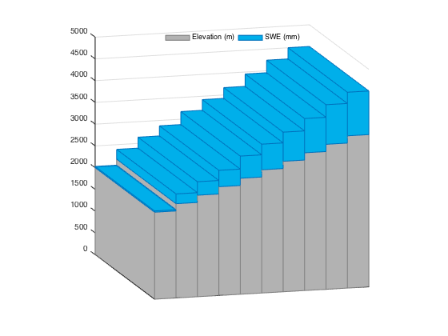
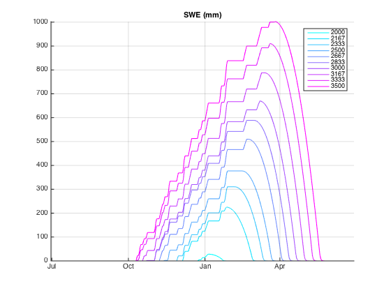

Snow hydrology toy model
Contents
Model setup
A=10e6; % catchment area in sq m nz=20; % nb of elev bands zmin=2000; % elevation of the lowest elev band zmax=3500; % elev of the top band % band elevations linearly spaced from zmin to zmax z=linspace(zmin,zmax,nz); nzmax=length(zmax); % nb of increments gfA=zeros(1,nz); % glacier fraction area per elevation band ft=1:365*2; % forcing time vector: two years t=ft; % computation time vector Tlr=-0.6e-2; % temp lapse rate in dC/m (-0.6d/100m) Plr=0.2e-3; % precip lapse rate in m-1 (0.2 km-1) Pmax=10e-3; % max precip rate by timestep (m) aT=20; % temp annual amplitude in dC mT0=10; % mean annual temp at z(1) in dC % daily temp in dC at z(1) (sinusoid of amplitude aT, mean mT0) T0=mT0+0.5*aT*cos(2*pi*ft/365+pi); % daily precip rate in m at z(1) (sinusoid set to zero at 80% random dates) P0=Pmax+Pmax*cos((ft-ft(1))*2*pi/length(ft)*2); rng(0); y=randsample(length(ft),0.8*length(ft)); P0(y)=0;
Plot options
colSnow=[0 175 234]/255;
colRain=[64 109 180]/255;
colTemp=[237 122 37]/255;
colDisch=[203 206 233]/255;
ix=(1:365)+181; % plot only 1 water year
Run model
[P,T,swe,Qout,Qsnowtot,Qglaciertot,Qraintot,SnowMasstot,~]...
= snowToy(A,t,ft,z,T0,Tlr,P0,Plr,gfA);
Plot some variables
figure(1),clf snowToyPlot(1,ix,A,t,P,T,Qout,SnowMasstot,colSnow,colRain,colTemp,colDisch);

Plot topography and max annual SWE by elev band
figure(2),clf snowToyStairs(2,ix,z,swe,colSnow);
Plot SWE by elevation
figure(2),clf iz = 1:nz; n=length(iz); colSwe=cool(n); h=plot(t,swe(iz,:)*1e3); for i=1:n,set(h(i),'Color',colSwe(i,:));end datetick('x','mmm') ylim([0 inf]) xlim(t(ix([1 end]))) legend(num2str(round(z(iz))')) title('SWE (mm)') box off grid set(gca,'layer','top')